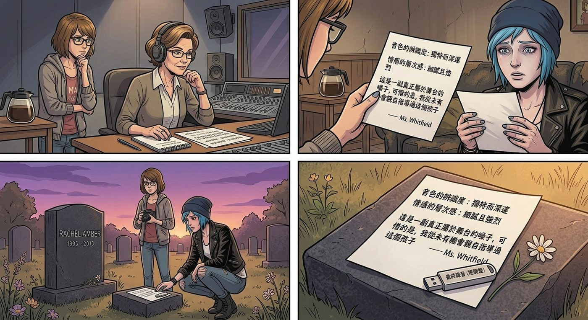

遲來的舞台

一、改變主意
那晚之後,Chloe 沉默了好幾天。直到某個尋常的下午,她忽然抓著 Max 的手,語氣裡帶著一種下定決心的認真。
「我想通了,」她說,「我想用 Rachel 的聲音,做一首歌。」
Max 愣了一下:「妳不是說暫時不用了嗎?」
「我後來想了很多,」Chloe 的眼神很堅定,「Rachel 這輩子最大的夢想,就是離開這座小鎮,成為一個真正的表演者、被人看見。她沒能等到那一天。」她頓了頓,聲音有點發緊,「如果現在有辦法,讓她的聲音好好被『聽見』一次——哪怕只是重建出來的、不完美的版本——我覺得,這是我唯一能替她圓的一個夢了。」
Max 看著她眼底那份少見的鄭重,輕輕點頭:「那我們就好好做。」
二、找上 Victoria
翻找出 Rachel 生前僅存的幾段舊錄音片段後,Kenji 花了整整一週,反覆調校 AI 聲音重建的參數,終於合成出一首完整、音色高度還原的翻唱曲目。
「這已經是我能做到的極限了,」他把成品交給 Chloe 時,語氣裡帶著少見的鄭重,「接下來需要專業的耳朵來聽聽看,音準、情感表達到不到位。」
Chloe 想了很久,最終鎖定了鎮上唯一一位真正科班出身、教過不少音樂系學生的聲樂老師——而那位老師,私下只收熟人引薦的學生,而唯一跟她搭得上關係的人,是 Victoria。
Chloe 深吸一口氣,鼓起勇氣,在走廊上攔住了她。
「Victoria,」她的語氣少見地誠懇,甚至帶著點小心翼翼,「我需要妳幫個忙。」
她把整件事的來龍去脈,原原本本地說了一遍——Rachel的夢想、AI重建的歌曲、想找專業老師點評的心願。
Victoria 挑眉,雙手抱胸,擺出一貫居高臨下的姿態:「妳知道那位老師有多難約嗎?我這張臉才勉強能約到人。」
「我知道,」Chloe 沒有像平常那樣頂嘴,只是低頭,語氣誠懇,「所以我才來求妳。」
Victoria 沉默了幾秒,目光落在 Chloe 手裡那張寫著歌曲細節的紙上,神情難得地認真了幾分,沒有像往常那樣陰陽怪氣地嘲諷幾句再敷衍打發。
「……我考慮一下。」她只說了這麼一句,便轉身快步離開,連平時那種拖著尾音的傲慢語氣都少了幾分。
Max 看著她的背影,忽然輕聲說:「這就是答應了。」
Chloe 疑惑地看她:「妳怎麼知道?」
「因為她沒有立刻拒絕,也沒有嘲笑妳,」Max 若有所思,「以 Victoria 的個性,如果真的不想幫,早就一句話堵回來了。她說『考慮』,其實就是在給自己一個台階,好讓她答應這件事的時候,顯得不那麼『輕易』。」
三、無人看見的眼淚
Victoria 快步走進沒人的空教室,反手鎖上門,背靠著門板緩緩滑坐到地上。
她死死咬住嘴唇,肩膀開始不受控制地顫抖,眼淚毫無預警地決堤,無聲地滑落下來。
她想起了很多事——想起自己曾經那麼渴望站上舞台被人看見,卻永遠被家裡安排好的道路困住;想起 Rachel 生前那種耀眼到讓人嫉妒又忍不住靠近的光芒;想起自己這些年,用尖酸刻薄把自己包裹得密不透風,卻在聽到「圓夢」這兩個字的瞬間,毫無防備地被戳穿了心底最柔軟的地方。
「憑什麼,」她低聲喃喃,聲音哽咽,「憑什麼她們幾個,什麼都不多,反而擁有的東西比我還多。」
她抱著膝蓋,任由積壓已久的情緒,在無人看見的空教室裡,安靜地宣洩了很久很久。
四、墓前的評語
一週後,Victoria 真的約到了那位聲樂老師。老師聽完那首重建的歌曲,神情專注,反覆聽了三遍,最後在紙上工整地寫下一段評語——關於音色的辨識度、情感的層次感、還有一句「這是一副真正屬於舞台的嗓子,可惜的是,我從未有機會親自指導過這個孩子」。
Chloe 拿到那張評語時,手指微微發顫,一時說不出話。
隔天午後,她和 Max 再次來到墓園,把那張評語連同一份重新錄製、經過老師建議調整過的最終版錄音,一起輕輕放在墓碑前。
「Rachel,」Chloe 蹲下身,聲音有些哽咽,卻帶著一種如釋重負的溫柔,「妳的聲音,終於被一個真正懂音樂的人認真聽過一次了。老師說,妳是真正屬於舞台的嗓子。」
她把那張評語紙,小心翼翼地壓在花束底下,不讓風吹走。
「雖然,」她低聲補充,「這個舞台,遲到了太久太久。但我還是想親口告訴妳。」
風輕輕吹過墓園,捲起一絲若有似無的暖意。
就在這時,一隻黃色的蝴蝶,再次翩然飛來,繞著墓碑和那張評語紙,低低盤旋了片刻,翅膀在午後陽光下,泛著同樣溫柔的金黃色澤。
Chloe 屏住呼吸,望著那隻蝴蝶靜靜停留的模樣,眼眶再次濕潤,這次卻帶著笑意。
「妳聽到了,對吧。」她輕聲說,像是終於卸下了一直壓在心底的重量。
蝴蝶停留了好一會兒,才緩緩振翅,朝著遠方明亮的天空飛去,身影漸漸融入光線之中。
Max 握住她的手,兩人並肩望著那片天空,誰都沒有再說話,只是任由這份遲來卻終於圓滿的心意,靜靜地,隨風而去。